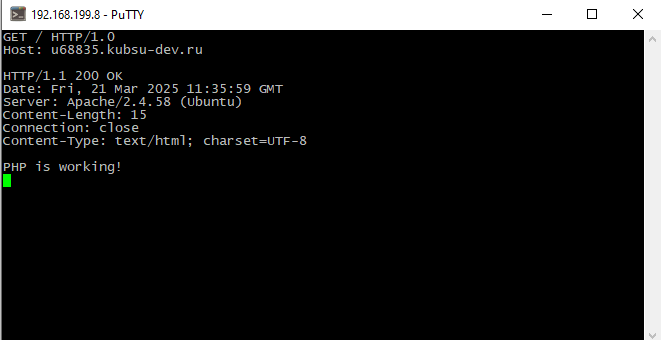

0. Проверка index.php на работоспособность
0.С помощью git clone отправляем файлы на сервер
1. Получаем главную страницу методом GET в протоколе HTTP 1.0;
2. Получаем внутреннюю страницу методом GET в протоколе HTTP 1.1;
3. Определяем размер файла file.tar.gz, не скачивая его;

4. Определяем медиатип ресурса /image.png;
5. Отправка комментария на сервер по адресу /index.php;
6. Получение первые 100 байт файла /file.tar.gz;
Пояснения
ETag - Уникальный идентификатор файла. Используется для кэширования и проверки изменений файла.
Content-Range -Сервер указывает, что вернул байты с 0 по 99 из общего размера файла 11335 байт.
Content-Type: Тип содержимого — файл в формате Gzip (архив).
Так как это бинарный файл (архив), его содержимое отображается в виде "мусора". Если открыть этот файл архиватором, он будет корректно распакован.
7. Определить кодировку ресурса /index.php.
8. Пулл файлов на сервер